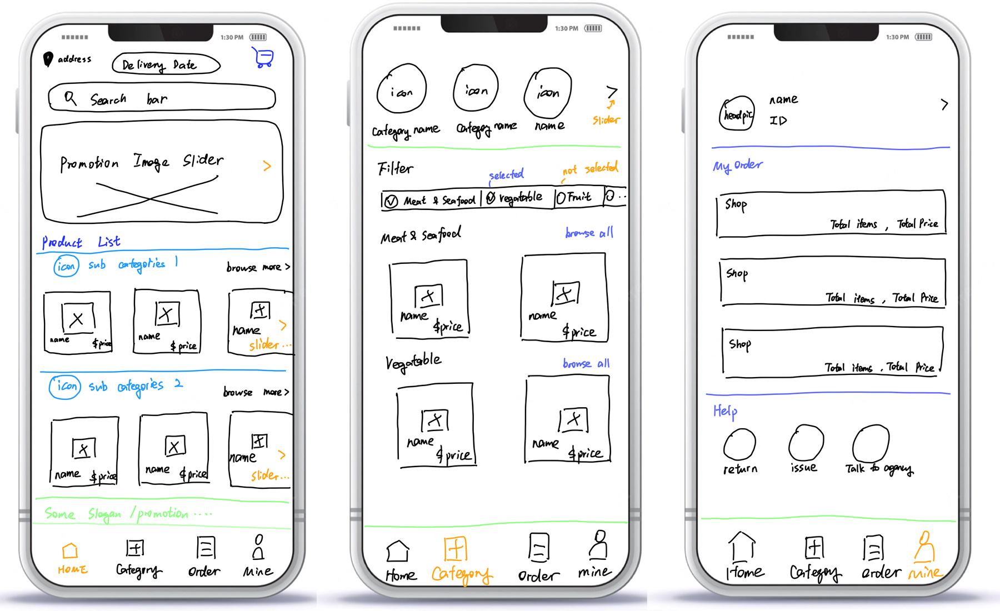
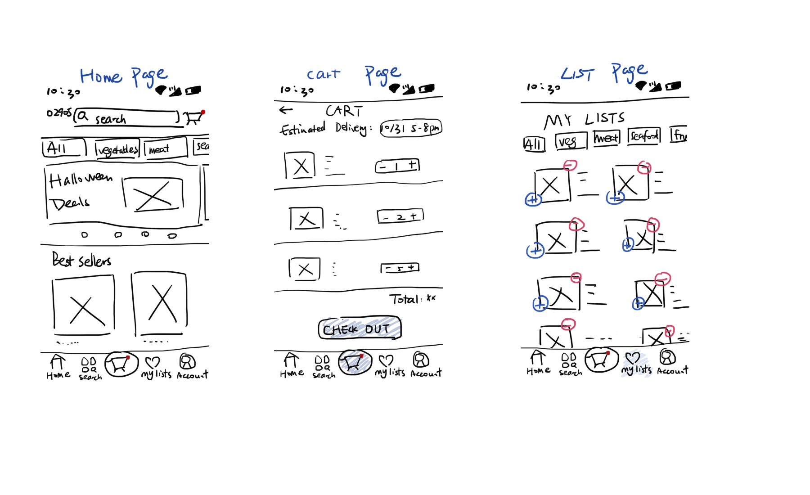
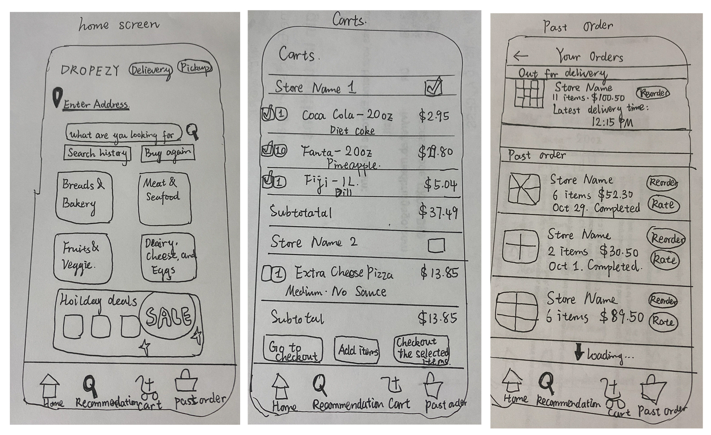
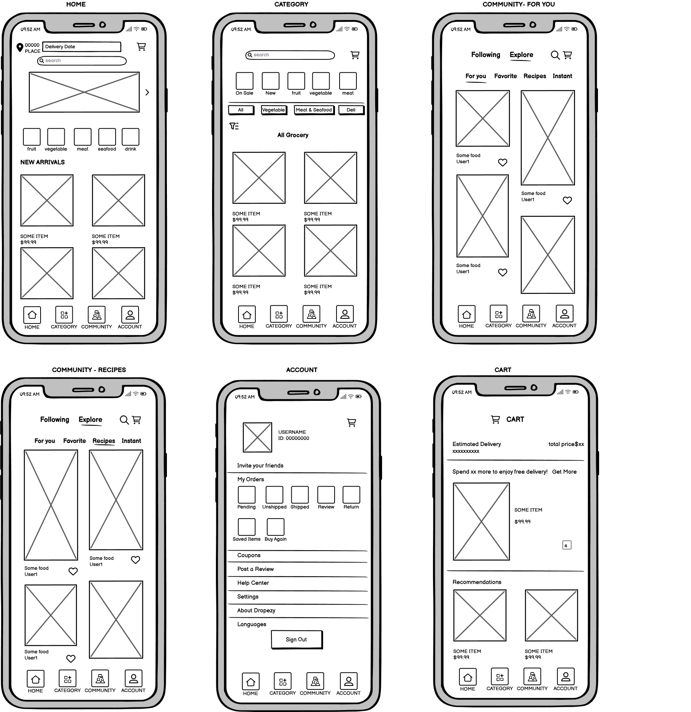
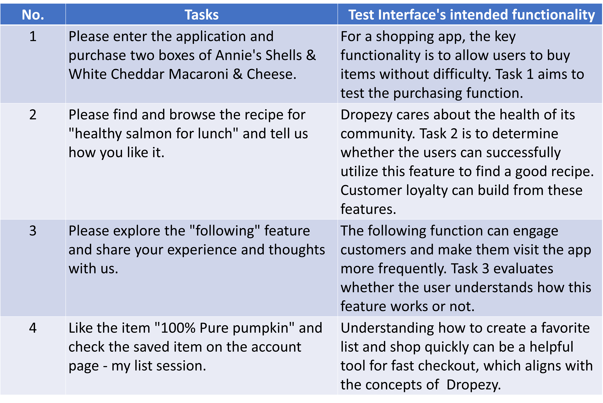
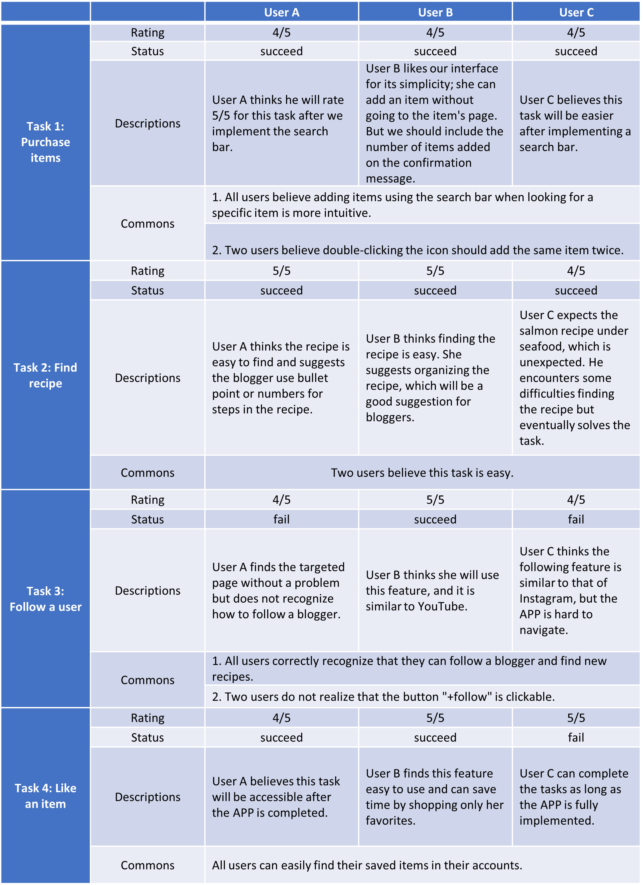

Context and Purpose
This is a group work.
We designed and produced our own version of an app developed
by a startup with the concept and goals in mind, and summarized
and improved our work through discussion and user experience..
In practical development, it is very important to have a firm grasp of the core
functionality and main idea of the application or software; this ensures that no time
is wasted on unimportant things and makes it easier and faster for the customer to use.
Likewise, hands-on experimentation by users can give us developers very important and
valuable insights, and there are many blind spots or taken-for-granted ideas that we
get ourselves into that come to light, thus allowing us to better find possibilities for improvement.
Process
- About The App
- Dropezy is a grocery delivery mobile application in Indonesia that aims to provide fast, convenient, affordable, and accessible delivery services.
- Dropezy differs from other shopping platforms in that it offers users an easy and convenient way to purchase daily needs online in smaller quantities, more frequently, and anytime.
- Besides lightning-fast deliveries to our customers, Dropezy cares about the safety, health, and happiness of their community.
- Dropezy embraced transparency and is committed to workplace safety and equal opportunity for women without a gender pay gap.
- About The Interface
Our design aims to demonstrate the concepts of Dropezy, targeting a young, affluent group of people who live in urban and suburban areas, with regular online shopping habits and relatively high consumption, who are more receptive to online shopping. In section 4, we will present how our final design aligns with the company's concepts and helps the company achieve its original goals.
Part 1: Sketching & Wireframing
A

B
C
D
Final Wireframe
Efficiency:
Our final wireframe provides users with a fast shopping process. All pages allow users to add items to their cart or favorites lists, and the home, category, and cart screens provide personalized recommendations to assist them in making purchases.
Diversity:
We add social features (community) to the original shopping app, allowing users to choose-buy-cook from one app, increasing customer stickiness.
Part 2: Mockups
Original version before studio Critique:
Summary of studio critique feedback:

Version after studio Critique:
Part 3: User Testing
Using our newly created, interactive interface, we conduct our usability test through a remote user testing service UserTesting.com. Below are the tasks we assigned to the users and our intentions.
User Testing Videos:
The following video demonstrates how three users interacted with our interface and the feedback they gave.
User A
User B
User C
Analysis:
In the following table, we summarized common issues they encountered and both positive and negative feedback from them.
Summary
We have three users showing quite different results. The first user performed okay with our prototyping. The second user, as an experienced grocery shopping app user, performed almost perfect as we expected. The third user encountered the most problems. All of them made valuable suggestions to our prototyping.
Things we didn't expect:
- When users were assigned to purchase a specific item, all of them first chose to try out the search bar. Although some items were displayed on the main pages, they did not first check if their target items were on the main page.
- Our users clicked the add button twice to add two items to the cart. We expected users to first add the item to the cart, then adjust the number of items they want on the cart page.
- It may be because of the order we assigned the tasks, users tried to navigate from the recipe page directly to the follower page.
- When users navigated to the recipe page, all of them used the click button instead of swiping the screen to the recipe page.
- One user tried to find the salmon recipe in the shopping section for seafood, which showed that the idea of community is not that intuitive to users.
- Only one user realized that the follow button could be clicked.
Things we can improve:
- When the app is fully functional, we can solve the problems with the search bar and the "like/add to saved item" button on the home page.
- We can implement better navigation for the community section. Clicking the Community button should link back to the community's main page.
- We should allow the user to double-click to add items twice.
- We should show the number of items added to the cart on the home/category page and also allow users to modify the number of items added to the cart.
- We can think about a better "+follow" button so that more people can understand how to use it.
Part 4:Justify our design decisions
Our design strives to achieve the company's original goals, making Dropezy a convenient and accessible delivery tool and a community that cares. The cart page clearly layouts the taxes, shipping costs, and total prices, which guarantees transparency. We designed a favorite list, which allows users to save time and effort finding the item they want. A community feature allows users to share their shopping experience, find good recipes from influencers and discuss the hottest topics. Thus, Dropezy can better hear the voice of the users, select its products, and develop strategies to meet their daily needs.
We implement interaction principles from three aspects:
- Interaction
We kept users informed about their interactions with the interface by providing visual feedback. For example, we included overlays to display confirmation messages when users add items to their carts or check out their carts, so that users can know if their interaction with the interface is successful.
- Navigation
We obtained user navigation accessibility in the interface.To maintain continuity, we added color to the bottom navigation bar to indicate what page users are on, and used clear indications to help users understand their destination and direction. Likewise, we included both swipes and clicks for the community page, making it more mobile-friendly.
- Hierarchy
We kept the interface's overall clear and structured hierarchy. We applied design elements such as colors, fonts, grids, and shadow effects to indicate the hierarchy of the interface.
✨Conslusion & Afterthoughts✨
- PROBLEM
- GOAL
- DISCUSSION
A single design does not always bring users a satisfactory user experience; sometimes the design would even go to a totally wrong direction.
The goal of this project is to improve iterative design and to conduct user testing in order to achieve better results.
As I insisted at the beginning and throughout my portfolio, a clean and effective design was my preferred goal. I had some disagreements with other teammates on the design of this project, such as the introduction of social features, but in the end I accepted the design for various reasons. I try to emphasize the importance of simplicity in my team work - so that users always know where they are, what they are doing, what they want to do, and what they can do - and this kind of goal-oriented design is very important for a fast-paced shopping software. If it were my own work, I would probably further simplify the social module and user settings interface, as well as reduce the number of steps required for users to search for items. Although this work is still a naive, I still enjoy the fun of teamwork and the new inspiration that comes from the clash of ideas.